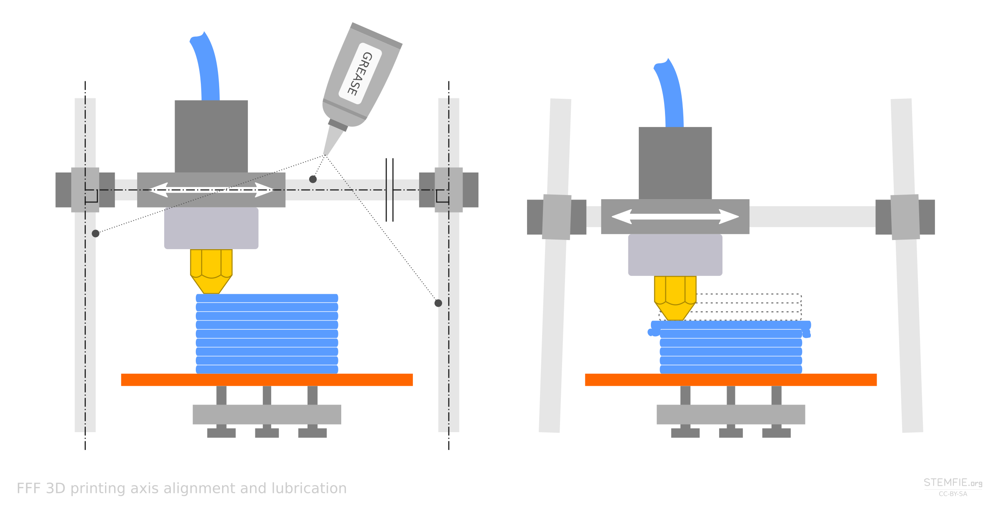
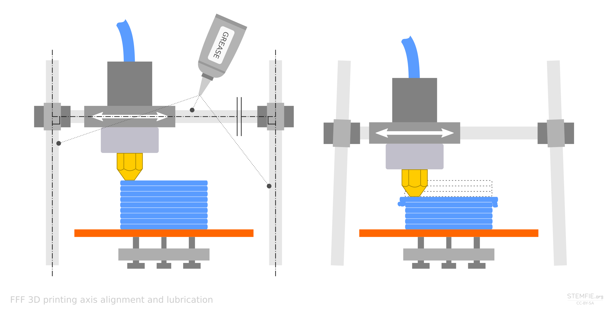

Az FDM a Fused Deposition Modeling kifejezés rövidítése, de a Stratasys cég védjegye, tehát bár a 3D-s nyomtatással foglalkozó közösségek széles körben használják, a kifejezés általában nem található meg a gyártók webhelyein. A technológia helyes neve tehát az FFF (Fused Filament Fabrication), amelyet olvasztott filamentszállal történő gyártásnak lehetne fordítani. A technológia a szálformában meglévő filament megolvasztásán és ellenőrzött elosztásán alapul.
Maga az FFF módszerű 3D-s nyomtatás a következőképp működik: a nyomtatási anyag (filament) szál formájában kerül a nyomtatóba. Ezután a nyomtatófejben (extruder) megolvad, majd az adagolófejen átnyomva rétegekben a kívánt termékké alakul. A 3D-s nyomtatás alapja a vékony rétegek pontos létrehozása. A nyomtatófej a nyomtató platform (ágy) felett mozog a 3D-s modell alapján betáplált utasítások szerint, és alulról felfelé rétegenként megalkotja a terméket.Ez a nyomtatási módszer pontos, de precizitása az adagolófej felbontásától függ. Ugyanakkor néhány hátránya is van, például az, hogy a nyomtatási anyag tulajdonságai hűlés közben megváltoztathatnak, és váratlanul összeeshet (milliméteres nagyságrendben). Ezért a nyomtató platform általában szintén hevített. Hőmérséklete a használt filament függvényében változik, de általában 50 és 120 ° C között van - így az anyag hűlése legalább részben szabályozható. A nyomtatófejben az olvasztott anyag hőmérséklete rendszerint 190–280°C között van, de az általánosan használt anyagok esetében maximum 230°C-on.
Az SLA típusú 3D-s nyomtatás teljesen más elvre épül, mint az FFF. Annak ellenére, hogy szintén additív (hozzáadásos) előállítási folyamatról beszélünk, itt már nem játszanak szerepet a magas hőmérsékleten megolvasztott filament szálak vagy a termék alakját követő mozgó nyomtatófej. Az SLA módszerű 3D-s nyomtatás sokkal futurisztikusabb: az alapja a fotoreaktív gyanta (angolul resin) fokozatos megkeményítése lézerfénnyel vagy diódákkal.
A folyamat azzal kezdődik, hogy egy vékony réteg folyékony gyantát öntünk egy tartályba, amelybe aztán a nyomtató platform is belemerül. A tartály alját ezután ellenőrzött módon alulról besugározzuk rendkívül pontosan irányított lézerfénnyel, melynek köszönhetően a gyanta fokozatosan megkeményedik és a nyomtató platformhoz vagy az előző réteghez tapad. A fény természetesen úgy van irányítva, hogy csak a termékréteget alkotó területeket érintse meg. Amikor az egyik réteg elkészült (teljesen megszilárdult), a nyomtatási platform megemelkedik, és a lézerfény új réteget képez. A rétegek magassága tized, vagy akár század milliméter nagyságrendű. A nyomtatott terméket a nyomtató mindig felülről tartja, így gyorsított felvételekben úgy néz ki, mintha a terméket fokozatosan kihúzták volna a gyantatartályból.Fontos megjegyezni, hogy még az SLA 3D-s nyomtatók is különböznek egymástól, leginkább a gyanta besugárzására használt lézerfény típusában. Az alapvető technológiák a lézer SLA, a DLP SLA (Digital Light Processing) és az MSLA (Masked SLA). A lézer SLA fokozatosan sugározza a réteget egyetlen vékony lézersugárral, ami meghosszabbítja a folyamatot. A DLP SLA projektort használ a teljes réteg besugárzásához, így a folyamat gyorsabb. Manapság azonban az MSLA elv tekinthető a legkorszerűbbnek, amely hasonlóan működik, mint a DLP, de projektor helyett LCD kijelzőt használ, gyakran UV diódákkal kombinálva. A diódák fényforrásként szolgálnak, az LCD pedig maszkként, mely az UV fényt a nyomtatandó réteg alakjára formálja.